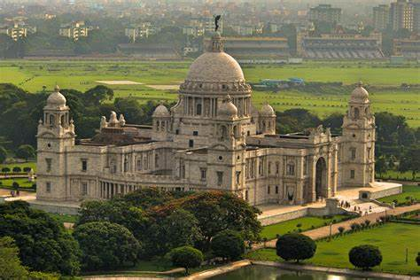
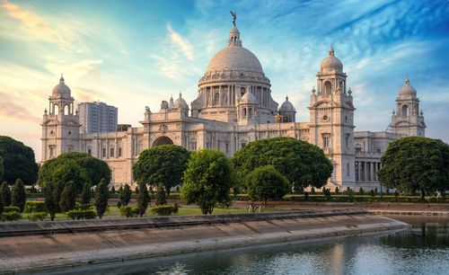

A city of rich history, culture, and diversity
Kolkata, formerly known as Calcutta, is the capital city of West Bengal, India. It has a storied past, having served as the capital of British India until 1911. Kolkata played a pivotal role in India's struggle for independence and is home to numerous historical landmarks.
Kolkata is a melting pot of cultures, traditions, and religions. It is renowned for its literary heritage, artistic expression, and culinary delights. The city's diverse population contributes to its vibrant cultural tapestry, making it a hub of creativity and innovation.
Key landmarks in Kolkata include the Victoria Memorial, Howrah Bridge, and the Marble Palace. These architectural marvels reflect Kolkata's colonial legacy and its transition into a modern metropolis.
Kolkata has a rich literary tradition and has been home to luminaries such as Rabindranath Tagore, Bankim Chandra Chattopadhyay, and Sarat Chandra Chattopadhyay. The city's literary festivals and cultural events celebrate its literary heritage and foster creative expression.
Kolkata is a hub of art, music, and theater. It hosts numerous art galleries, music concerts, and theater performances throughout the year. The city's vibrant cultural scene attracts artists, musicians, and performers from around the world.
Kolkata is famous for its diverse cuisine, influenced by Bengali, British, Chinese, and Mughal culinary traditions. Street food delicacies such as phuchka, kathi roll, and jhal muri are popular among locals and visitors alike.